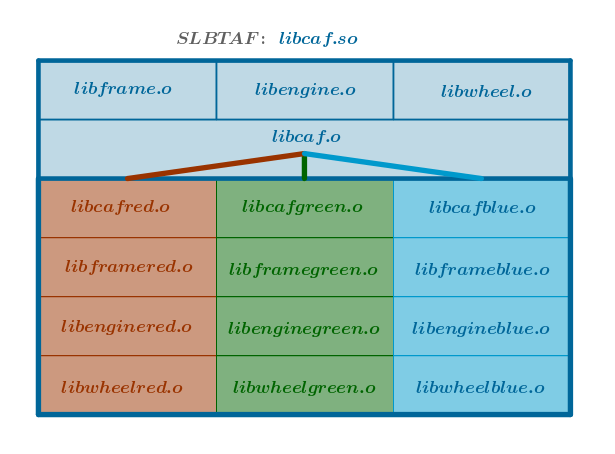
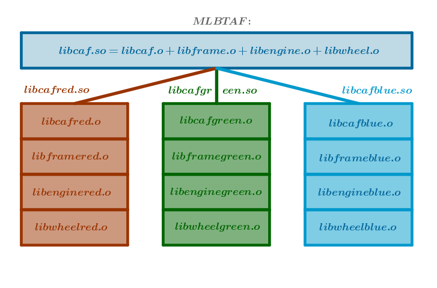
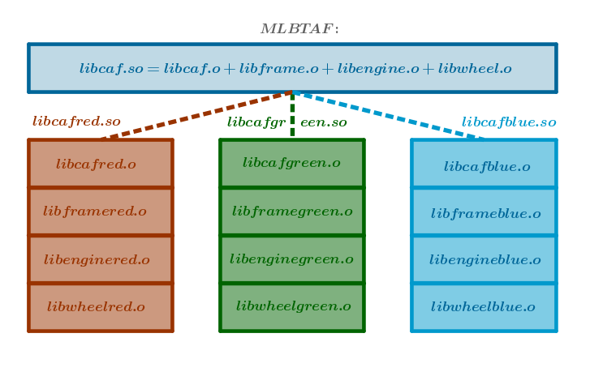

There exist entities which, while consisting of an arbitrary number of parts that vary in minutia from one entity to another, are, nonetheless, united by a common theme that transcends the differences among and captures the commonalities of its parts.
Collectively such parts, members, form a family.
In mathematical analysis we may form families of functions based on the type of numbers of their range and domain - real vs. complex, and the number of their arguments - single vs. multiple. Among the single real-variable real-valued functions we may distinguish linear, power, exponential, logarithmic and trigonometric families, to name a few:
$$mx + b,\; x^{\mu},\; a^x,\; \log_a(x),\; \sin(x)$$In geometry we may form families of plane curves based on their characteristic shape: witch of Agnesi, astroid, lemniscate of Bernoulli, cardioid, cissoid, conchoid, Lissajous curves, logarithmic spiral, etc.
In software user interfaces, or UIs for short, are an example of entities that may form a family. The commonality of UIs that transcends the rendering, decorative and embellishing differences of its parts across various themes is the visual nature of these parts each of which carries a distinct visual burden: windows - to contain, menus and lists - to choose, buttons - to act, scroll bars - to move, progress bars - to measure and so on.
Recall that ADT encapsulates one custom C data type. In fact, ADT implicitly delineates a Factory consisting of one concrete data type since the names of its life cycle functions can not vary and, hence, they can not be used to create variables of many similar but different data types.
Factory addresses ADT's shortcomings by providing a mechanism to encapsulate an arbitrary number of similar but different concrete data types all of which possess enough commonality to be consolidated under one interface - an abstract data type. It follows then that Factory implicitly delineates an Abstract Factory consisting of one concrete family which consists of one abstract data type.
Abstract Factory addresses Factory's shortcomings by providing a mechanism to encapsulate an arbitrary number of families each of which consists of equal (arbitrary) number of commonly themed abstract data types each of which consists of an arbitrary number of concrete data types.
Hence, Abstract Factory is a restrictive Factory of Factories - the only variables that it allows to create are of data types that belong to the same family.
To Factory's consequences Abstract Factory adds the following ones:
Sample Problem
A car has three color-driven families: "red", "green" and "blue" and, initially, one part or member - a frame.
Implement an Abstract Factory to manufacture this car's parts.
Generic Solution Description
1) Identify all the members that form a family. Implement each member as a Factory that lacks New(), Construct() and SizeOf() public functions. For each concrete member implement the corresponding SizeOf() and Construct() functions.
2) Choose a native C data type to be used as a key for selecting a concrete family.
3) Make Abstract Factory's SizeOf(), New() and Construct() functions accept the chosen key as a parameter.
4) Implement Abstract Factory as a Factory consisting of sets of Construct() and SizeOf() functions of family's members, one set per member.
5) For each family member implement the corresponding New() function in Abstract Factory proper.
Sample Solution
Step 1
We will use human-readable C strings, char*, as a key to select a given family out of many available:
By folding the above key into the corresponding naming convention we will partition our source code as follows:
These files can be packaged into an executable form in a multitude of ways. Choose one.
For demonstration purposes the drawings below show two extra members not implemented here - an engine and a wheel:
1) SLBTAF:
2) MLBTAF:
3) MLRTAF:

Step 2
Implement the car's frame as a Factory that lacks New(), Construct() and SizeOf() public functions.
Our frame's public interface will consist of the self-identification function, name():
libframe.h:
#include <sys/types.h> typedef struct frame { const char* ( *name )(); void ( *destruct )( struct frame* ); } frame_t; extern void frameDelete( frame_t** ); extern const char* frameName( frame_t* ); extern void frameDestruct( frame_t* );
libframe.c:
#include <stdio.h> #include <stdlib.h> #include <dlfcn.h> #include "libframe.h" extern void frameDestruct( frame_t* frame ) { printf( " %s.%d: frameDestruct()\n", __FILE__, __LINE__ ); frame->destruct( frame ); } extern void frameDelete( frame_t** frame ) { printf( " %s.%d: frameDelete()\n", __FILE__, __LINE__ ); if ( !frame || !*frame ) { return; } frameDestruct( *frame ); free( *frame ); *frame = ( frame_t* )NULL; } extern const char* frameName( frame_t* frame ) { const char* fnm; printf( " %s.%d: frameName()\n", __FILE__, __LINE__ ); fnm = frame->name(); return fnm; }
Step 3
Implement concrete frame data types.
Observe that just like in an ordinary Factory the linkage specification of Construct() and SizeOf() is extern: the names of these functions must be searchable across translation units since they will be used in the corresponding concrete family's factory, see Step 5.
However, unlike an ordinary Factory we gave these functions arbitrary names because we will be manipulating them manually, at keyboard time, again - see Step 5.
Below is the "red" frame implementation. Type in the remaining implementations by analogy.
libframered.c:
#include <stdio.h> #include "libframe.h" typedef struct { frame_t frameadt; } framered_t; extern size_t frameSizeOfred(); extern frame_t* frameConstructred( void* ); static const char* frameNameRed(); static void frameDestructRed( frame_t* ); static frame_t frameAdtRed = { frameNameRed, frameDestructRed }; extern size_t frameSizeOfRed() { size_t rv; printf( " %s.%d: frameSizeOfred()\n", __FILE__, __LINE__ ); rv = sizeof( framered_t ); return rv; } extern frame_t* frameConstructRed( void* mem ) { frame_t* rv; framered_t* framered = ( framered_t* )mem; printf( " %s.%d: frameConstructred()\n", __FILE__, __LINE__ ); framered->frameadt = frameAdtRed; rv = &framered->frameadt; return rv; } static void frameDestructRed( frame_t* frame ) { printf( " %s.%d: frameDestructRed()\n", __FILE__, __LINE__ ); } static const char* frameNameRed() { printf( " %s.%d: frameNameRed()\n", __FILE__, __LINE__ ); return "red"; }
Step 4
Implement Abstract Factory as a Factory driven by the chosen key, see the Factory chapter for details.
Initially our Abstract Factory will be a Factory of car frames. As such, make frame's creational functions a part of Abstract Factory ADT's public interface.
Commentary
The life of a car's Abstract Factory-type variable begins with a call to cafNew(). For example, here is a way to create a factory that will manufacture a "red" family of cars:
caf_t* caf = cafNew( "red" );
Once a name of a concrete family has been captured, it will not be used explicitly to create its members. Observe below that, unlike its ordinary Factory's counterparts, the prototypes of the frame's creational functions do not accept a key for selecting a concrete frame any more. That key has been replaced by the abstract factory which carries out this selection internally, see cafConstruct() in libcaf.c below, keeping the key out of external reach. This is the mechanism that ensures consistency of members across the given family.
Once a frame is created, it assumes a life of its own that is of no concern to the car's Abstract Factory.
Since the number of copies of a member's given New() function is one, this function is implemented in Abstract Factory's proper and, as such, it is absent from this Abstract Factory ADT's interface.
Since the number of copies of a member's Consturct() and SizeOf() functions is arbitrary - one per concrete type, these functions are a part of Abstract Factory ADT's interface.
libcaf.h:
#include <sys/types.h> #include "libframe.h" typedef struct caf { /* Abstract Factory Proper, family. */ const char* ( *name )(); void ( *destruct )( struct caf* ); /* Family Members' Factories. Frame. */ frame_t* ( *frameConstruct )( void* ); size_t ( *frameSizeOf )(); } caf_t; /* Abstract Factory Proper. */ extern caf_t* cafNew( const char* ); extern void cafDelete( caf_t** ); extern caf_t* cafConstruct( void*, const char* ); extern void cafDestruct( caf_t* ); extern size_t cafSizeOf( const char* ); extern const char* cafName( caf_t* ); /* Frame's Factory. */ extern frame_t* frameNew( caf_t* ); extern frame_t* frameConstruct( caf_t*, void* ); extern size_t frameSizeOf( caf_t* );
In the code below the names of files and functions that must adhere to a chosen naming convention are highlighted.
libcaf.c:
#include <stdio.h> #include <stdlib.h> #include <dlfcn.h> #include "libcaf.h" /* Abstract Factory Proper. */ extern size_t cafSizeOf( const char* cafnm ) { size_t rv; size_t ( *cafsizeof )(); void* handle = RTLD_DEFAULT; char nm[ 1024 + 1 ] = { 0 }; size_t nmsz = sizeof( nm ); printf( "%s.%d: cafSizeOf()\n", __FILE__, __LINE__ ); #ifdef CAR_MLRTAF snprintf( nm, nmsz, "libcaf%s.so", cafnm ); handle = dlopen( nm, RTLD_LAZY | RTLD_GLOBAL ); #endif snprintf( nm, nmsz, "cafSizeOf%s", cafnm ); cafsizeof = ( size_t ( * )() )dlsym( handle, nm ); rv = cafsizeof(); return rv; } extern caf_t* cafConstruct( void* mem, const char* cafnm ) { caf_t* caf; caf_t* ( *cafcnstrct )( void* ); char fnm[ 1024 + 1 ] = { 0 }; size_t fnmsz = sizeof( fnm ); printf( "%s.%d: cafConstruct()\n", __FILE__, __LINE__ ); snprintf( fnm, fnmsz, "cafConstruct%s", cafnm ); cafcnstrct = ( caf_t* ( * )( void* ) )dlsym( RTLD_DEFAULT, fnm ); caf = cafcnstrct( mem ); return caf; } extern caf_t* cafNew( const char* cafnm ) { caf_t* caf; size_t n = cafSizeOf( cafnm ); void* mem = calloc( 1, n ); printf( "%s.%d: cafNew()\n", __FILE__, __LINE__ ); caf = cafConstruct( mem, cafnm ); return caf; } extern void cafDestruct( caf_t* caf ) { printf( "%s.%d: cafDestruct()\n", __FILE__, __LINE__ ); caf->destruct( caf ); } extern void cafDelete( caf_t** caf ) { printf( "%s.%d: cafDelete()\n", __FILE__, __LINE__ ); if ( !caf || !*caf ) { return; } cafDestruct( *caf ); free( *caf ); *caf = ( caf_t* )NULL; } extern const char* cafName( caf_t* caf ) { const char* rv; printf( "%s.%d: cafName()\n", __FILE__, __LINE__ ); rv = caf->name( caf ); return rv; } /* Family Members' Factories. Frame. */ extern frame_t* frameNew( caf_t* caf ) { frame_t* frm; size_t n = caf->frameSizeOf(); void* mem = calloc( 1, n ); printf( "%s.%d: frameNew()\n", __FILE__, __LINE__ ); frm = caf->frameConstruct( mem ); return frm; } extern frame_t* frameConstruct( caf_t* caf, void* mem ) { frame_t* frm; printf( "%s.%d: frameConstruct()\n", __FILE__, __LINE__ ); frm = caf->frameConstruct( mem ); return frm; } extern size_t frameSizeOf( caf_t* caf ) { size_t frmsz; printf( "%s.%d: frameSizeOf()\n", __FILE__, __LINE__ ); frmsz = caf->frameSizeOf(); return frmsz; }
Step 5
Implement concrete families.
In Step 4 cafConstruct() in libcaf.c promised that a given key will be mapped to the corresponding family.
This is where (the author of) Abstract Factory fulfills that promise by mapping, at keyboard time, members' concrete creational functions to the current family - "red" frames to "red" family, "green" frames to "green" family and so on.
Below is the "red" family implementation. Type in the remaining implementations by analogy.
libcafred.c:
#include <stdio.h> #include <stdlib.h> #include <string.h> #include "libcaf.h" typedef struct { caf_t cafadt; } cafred_t; extern size_t cafSizeOfred(); extern caf_t* cafConstructred( void* ); static const char* cafNameRed(); static void cafDestructRed( caf_t* ); /* The names of the corresponding frame's concrete creational functions are searched across translation units ... */ extern frame_t* frameConstructRed( void* ); extern size_t frameSizeOfRed(); static caf_t cafAdtRed = { cafNameRed, cafDestructRed, /* ... recorded ... */ frameConstructRed, frameSizeOfRed }; extern size_t cafSizeOfred() { size_t rv; printf( " %s.%d: cafSizeOfred()\n", __FILE__, __LINE__ ); rv = sizeof( cafred_t ); return rv; } extern caf_t* cafConstructred( void* mem ) { cafred_t* cafred = ( cafred_t* )mem; printf( " %s.%d: cafConstructred()\n", __FILE__, __LINE__ ); /* ... and set. */ cafred->cafadt = cafAdtRed; return &cafred->cafadt; } extern void cafDestructRed( caf_t* caf ) { cafred_t* cafred; printf( " %s.%d: cafDestructRed()\n", __FILE__, __LINE__ ); if ( !caf ) { return; } cafred = ( cafred_t* )caf; memset( cafred, 0, sizeof( cafred_t ) ); } static const char* cafNameRed() { printf( " %s.%d: cafNameRed()\n", __FILE__, __LINE__ ); return "red"; }
Step 6
Build the Abstract Factory.
SLBTAF:
gcc -D_GNU_SOURCE -g -c -fPIC -I . libcaf.c gcc -g -c -fPIC -I . libcafred.c gcc -g -c -fPIC -I . libcafgreen.c gcc -g -c -fPIC -I . libcafblue.c gcc -g -c -fPIC -I . libframe.c gcc -g -c -fPIC -I . libframered.c gcc -g -c -fPIC -I . libframegreen.c gcc -g -c -fPIC -I . libframeblue.c gcc -g -shared -o libcaf.so libcaf.o \ libcafred.o \ libcafgreen.o \ libcafblue.o \ libframe.o \ libframered.o \ libframegreen.o \ libframeblue.o -ldl
MLBTAF:
gcc -D_GNU_SOURCE -g -c -fPIC -I . libcaf.c gcc -g -c -fPIC -I . libcafred.c gcc -g -c -fPIC -I . libcafgreen.c gcc -g -c -fPIC -I . libcafblue.c gcc -g -c -fPIC -I . libframe.c gcc -g -c -fPIC -I . libframered.c gcc -g -c -fPIC -I . libframegreen.c gcc -g -c -fPIC -I . libframeblue.c gcc -g -shared -o libcaf.so \ libcaf.o \ libframe.o -ldl gcc -g -shared -o libcafred.so \ libcafred.o \ libframered.o gcc -g -shared -o libcafgreen.so \ libcafgreen.o \ libframegreen.o gcc -g -shared -o libcafblue.so \ libcafblue.o \ libframeblue.o
MLRTAF:
Add -DCAR_MLRTAF option to MLBTAF's libcaf.c build line above:
gcc -D_GNU_SOURCE -DCAR_MLRTAF -g -c -fPIC -I . libcaf.c
Step 7
Write a sample application to exercise the Abstract Factory pattern.
caf.c:
#include <stdio.h> #include "libcaf.h" extern int main( int argc, char* argv[] ) { const char* familynm; caf_t* caf; frame_t* frame; if ( argc < 2 ) { return -1; } familynm = ( const char* )argv[ 1 ]; caf = cafNew( familynm ); frame = frameNew( caf ); printf( "Family name: \"%s\"\n", cafName( caf ) ); printf( "Frame from \"%s\" family.\n", frameName( frame ) ); printf( "frameSizeOf() = %zu\n", frameSizeOf( caf ) ); frameDelete( &frame ); cafDelete( &caf ); return 0; }
Step 8
Build the sample Abstract Factory application.
SLBTAF and MLRTAF:
gcc -g -c -I . caf.c gcc -g -L . -o caf caf.o -lcaf
MLBTAF:
gcc -g -c -I . caf.c gcc -g -L . -o caf caf.o -lcaf -lcafred -lcafgreen -lcafblue
Step 9
Run the sample program with various inputs:
./caf red libcaf.c.18: cafSizeOf() libcafred.c.34: cafSizeOfred() libcaf.c.60: cafNew() libcaf.c.42: cafConstruct() libcafred.c.46: cafConstructred() libframered.c.26: frameSizeOfred() libcaf.c.116: frameNew() libframered.c.39: frameConstructred() libcaf.c.97: cafName() libcafred.c.73: cafNameRed() Family name: "red" libframe.c.36: frameName() libframered.c.57: frameNameRed() Frame from "red" family. libcaf.c.140: frameSizeOf() libframered.c.26: frameSizeOfred() frameSizeOf() = 16 libframe.c.17: frameDelete() libframe.c.9: frameDestruct() libframered.c.51: frameDestructRed() libcaf.c.78: cafDelete() libcaf.c.70: cafDestruct() libcafred.c.58: cafDestructRed()
Exercises
1) Carry out the following modifications and analyze their cost:
- add a new family keeping the number of the existing members constant
- add a new member to all the existing families (whose overall number should remain constant)
Files
libcaf.h libcaf.c libcafred.c libcafgreen.c libcafblue.c
libframe.h libframered.c libframegreen.c libframeblue.c mklib.sh
\(\blacksquare\)